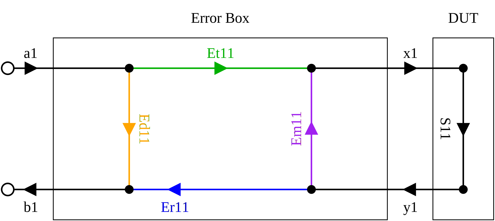
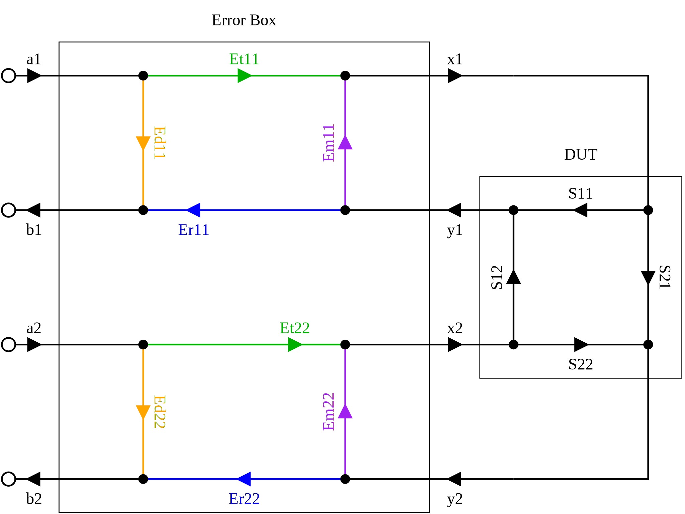

Contents
The VNA must be calibrated using known reference standards to correct
for errors in the VNA, directional bridges, connectors, cables, test
fixture and other components. Most of these errors can be modeled
as an error box
sitting between a perfect VNA and the device
under test (DUT). Later, when making measurements of a device under
test, we mathematically remove (de-embed) the error box to correct the
measurements.
The a1 and a2 inputs into the error box are incident signals from the VNA to the DUT. Some VNA's measure these. When not measured, we assume that during the forward measurement, a1=1 and a2=0, and during the reverse measurement, a1=0 and a2=1. The reflected signals from the DUT to the VNA are the outputs, b1 and b2, which the VNA measures.
The x1, y1, x2 and y2 arrows define the
reference plane
that delineates the VNA from the DUT.
The error terms are simply the S-parameters of the error box. Since the error box is a 4-port device, it has 16 terms. Depending on the calibration type, however, we may or may not include all sixteen error terms.
It's convenient to write the error terms as a 2x2 matrix of matrices:
|
|
||||||||
|
|
Where the four sub-matrices, Ed, Er, Et and Em represent, directivity error, reflection tracking error, transmission tracking error and port match error, respectively.
The goal of calibration is to solve for the error terms using measurements of known standards. While the scattering parameter form of the error box is easy to understand, it's not easy to solve the error parameters in this form. It's much easier to solve for them in the scattering transfer (T) or inverse scattering transfer (U) form where the problem becomes a linear system of equations. If E terms are desired, we can then convert the resulting T or U terms to E. The conversion from T to E is the same as for converting t-parameters to s-parameters except that the elements of the 2x2 T matrix are matrices.
The software supports several types of error terms, capable of correcting different errors. In general, calibration types with more error terms correct for more errors, but this comes at a cost of requiring more calibration standards. Also, while it may seem better to always use calibrations that correct for more errors, correcting for errors you don't actually have in your test setup may in fact add correlated noise to your measurements. Therefore, it's important to consider which errors are likely significant in a given situation and choose a calibration type that matches.
For all supported calibration types, the software solves for the error terms using either scattering transfer (T) or inverse scattering transfer (U) parameters which turn the problem into a linear system of equations. This provides wide flexibility in the choice of standards used, and it makes it always possible to use more than the minimum required number of standards in a calibration. If the resulting linear system is over-determined, the software finds a least-squares solution using Q-R decomposition.
The E12 type is a generalization of the classic 12-term error correction model historically calibrated using SOLT or OSLT. Under the covers, it's solved using U parameters which are then converted to E parameters.
The rest of this section goes through each calibration type, shows which errors are corrected, and gives the calibration standard requirements.

In reflection only setups, the choice of calibration type doesn't matter -- all types correct for the same three errors: directivity, reflection tracking, and source match. These are labeled Ed11, Er11 and Em11, respectively, in the diagram. Et11 is a free variable which we set to 1.
The choice of E, T or U error terms changes only the way the error terms are stored in the VNA calibration file. Mathematically, all are equivalent.
This calibration requires a minimum of three distinct reflect standards. Typical choices are short, open, and match.
The simplest calibration in the 2x1 setup has 6 error terms, one of which is a free variable (typically Et11 is set to 1), giving it effectively 5 terms. The software solves for the error terms using inverse scattering transfer (U) parameters where they form a linear system. The calibration type is called U8, the 8 being the number of error terms this type produces in the 2x2 configuration.
Typical choice of standards are short, open, match, and through. It's possible, however, to perform this calibration using only three standards, e.g. through, reflect and delay.
We can improve on the U8 calibration for free by adding the off diagonal directivity leakage terms to the model: in this case the Ed21 term, bringing the effective number of errors terms to 6. Whenever we're measuring a reflect standard on port 1, we can opportunistically measure the leakage term into the second detector. The N2PK VNA application solves this system using a hybrid of scattering (E) and inverse scattering transfer (U) parameters. The opportunistically measured leakage terms are first subtracted out, then the system is solved using U parameters where it becomes a linear system.
The E12 calibration type (the well known 12-error term model in 2x2) is equivalent to UE10 in this setup, providing six error terms. When E12 is used, the software solves the system using U parameters as above then converts the U parameters to scattering E parameters before saving the calibration. Thus in the 2x1 setup, UE10 and E12 are exactly the same except for the format in which they save the error terms.
Like in U8, typical choice of standards are short, open, match, and through. Here also, it's possible to perform the calibration using only three standards, e.g. through, reflect and delay.
When using a test fixture with significant crosstalk between the probes, a stronger model that corrects for the additional errors is needed. The U16 calibration type provides 12 error terms, one of which is a free variable, giving it effectively 11 error terms. The software solves this calibration using inverse scattering transfer (U) terms, where it's a linear system.
In 2x1 setups, at least six standards are required for calibration! For example, a possible choice is: short-open, short-match, open-match, open-short, match-short and through. Why six? We have to solve for 11 unknowns, and each standard gives us at most two measurements. So at minimum, we need at least 5 two-port standards and 1 single-port standard to reach 11.
When the calibration has more columns than rows, we cannot use U parameters. Instead, we use T parameters. The T8, TE10 and T16 types are duals of U8, UE10 and U16, respectively, correcting for the same errors as their counterparts.
In the 2x1 setup, T8 calibration provides six error terms of which one is a free variable, leaving effectively five terms.
Typical choice of standards are short, open, match, and through. It's possible, however, to perform this calibration using only three standards, e.g. through, reflect and delay.
The TE10 calibration type adds the off-diagonal directivity leakage term Ed12, bringing the effective number of error terms to six.
Calibration standard requirements are the same as for U8, UE10 and T8. Typical choice of standards are short, open, match, and through. As the other cases, it's possible to perform the calibration using only three standards, e.g. through, reflect and delay.
The T16 calibration type adds additional leakage terms that correct for crosstalk between the probes in the test fixture.
As in U16, in 1x2 dimension setups, at least six calibration standards are required. A possible choice is: short-open, short-match, open-match, open-short, match-short and through.

In the 2x2 setup, T8 and its dual U8 produce 8 error terms, one of which is a free variable, giving effectively 7 error terms.
The 2x2 T8 and U8 calibrations require only three standards, e.g. short-open, short-match, and through. At least one of the standards must have a through component, e.g. through or delay.
The TE10 and UE10 calibration types add the off-diagonal directivity leakage terms Ed12 and Ed21, bringing the effective number of error terms up to 9. Again, only three calibration standards are needed. There is an additional requirement, however, that at least one standard must be a double reflect, e.g. has no through component.
The E12 calibration type is a generalization of the well-known 12-term error correction model, historically calibrated using SOLT or OSLT standards.
In the forward direction, E12 produces six error terms exactly as in the 2x1 UE10/E12 calibrations above.
And in the reverse direction, it produces another set of six error terms, again as in the 2x1 UE10/E12 case, except with the ports rotated. Together, these form the expected 12 error terms
The advantage of using two independent 2x1 systems over a single 2x2 system is that it corrects for errors in the forward/reverse switch without having to know the incident signal (reference or "a" measurements) on the DUT, because when the switch is changed, a completely separate set of error terms is used. This calibration can even correct for errors in a switch that lies between the directional couplers and DUT.
These parameters are solved using a hybrid of scattering (E) and inverse scattering transfer (U) parameters as in the UE10 calibration. As with all the other the methods described here, this turns the calibration problem into a linear system of equations, providing broad flexibility in the choice of standards used. If more than the required number of standards is used, the error terms are solved in a least-squares manner.
This calibration requires a minimum of four calibration standards. A typical choice is: short-open, match-open, match-short, through. At least one standard must have a through component, e.g. through or delay, and at least one standard must have no through component, e.g. short-open.
The T16 and U16 calibration types produce 16 error terms, one of which is a free variable, giving effectively 15 error terms. These calibrations correct for all leakages including crosstalk between the VNA probes in the test fixture. Note, however, that they don't correct for errors in the forward/reverse switch unless the incident signals on the DUT ('a' measurements) are known. As a result, it's important to use care in the design of the RF switch.
At least five two-port standards are required for this calibration. A typical choice is: short-open, short-match, open-match, open-short and through.
Under the
The Sweep settings are filled in automatically from the setup. If desired, you can narrow but not widen the frequency range. Select the number of frequency steps and whether the VNA should use linear or logarithmic spacing. Note that because of the way the VNA does frequency interpolation, it's generally better to have a smaller number of accurately measured calibration points than a much larger number of noisy ones.
The software automatically fills in the Standards table with a viable sequence of calibration standards. You can use the suggested standards or alternately use a set of your choice. You can use any arbitrary known single or dual port device as a standard by copying the network parameter data file into the VNA's configuration directory, "$HOME/.n2pkvna/*/" before starting the program. The filename must end in ".npd", ".ts", ".s1p" or ".s2p".
When ready, press the